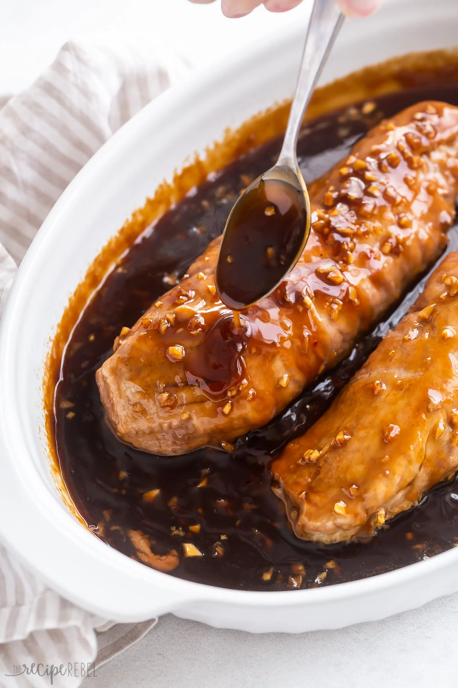

Honey Garlic Pork Tenderloin
This Honey Garlic Pork Tenderloin Recipe is one of my favorite ways to make pork tenderloin in the oven! It’s made with juicy pork smothered in a sweet and savory honey garlic sauce!
INGREDIENTS:
-
Pork Tenderloins: you’ll need two pork tenderloins equalling about 2-2.5 pounds. Be sure they’re both trimmed and ready to go.
-
Oil: adds moisture and helps the seasonings stick.
-
Seasoning Salt: seasoning salt is a simple way to add a ton of flavor to the pork.
-
Honey, Chicken Broth, and Soy Sauce: a sweet, salty, and super flavorful base for our honey garlic sauce.
-
Garlic: use freshly minced garlic for the best garlicky flavor.
-
Apple Cider Vinegar: the bright, tanginess of cider vinegar cuts the sweetness from the honey.
-
Salt: enhances other flavors within the sauce.
-
Cornstarch: helps thicken the honey garlic sauce.
-
Red Pepper Flakes: optional, but highly recommended for a kick of heat!
How to Make?-Procedure:
1. Prep the tenderloins: Place the tenderloins into a lightly greased 9×13″ baking dish, brush them with oil, then season with seasoning salt.
2. Make the sauce: In a bowl, whisk together honey, broth, soy sauce, garlic, vinegar, salt, cornstarch, and red pepper flakes.
3. Bake: Pour the sauce around the tenderloin, then bake until 140ºF.
4. Drizzle the thickened sauce over the finished tenderloin.
